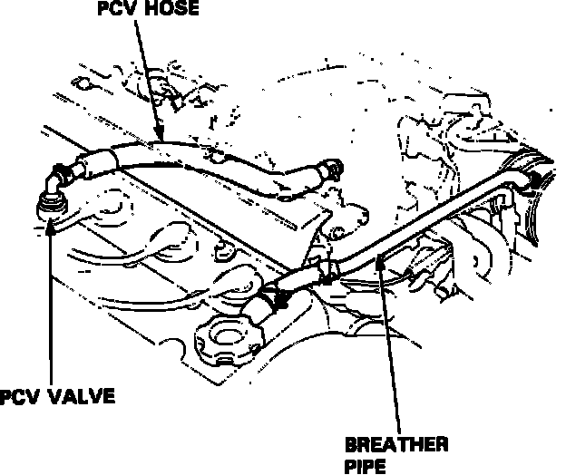
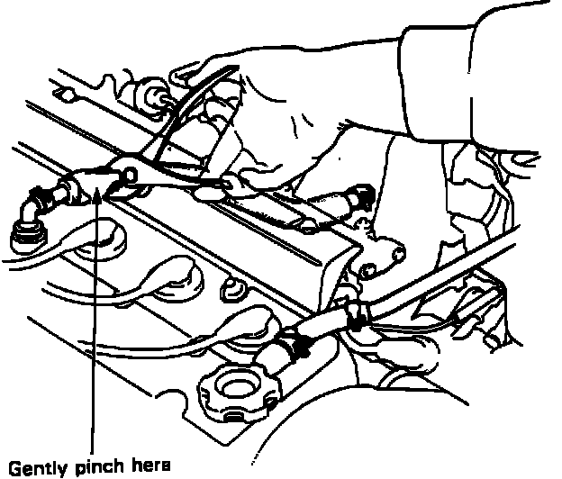

Positive Crankcase Ventilation: Testing and Inspection
Positive Crankcase Ventilation System:

Inspection:
Checking Hoses And Connections:

1. Check the crankcase ventilation hoses and connections for leaks and clogging.
Testing PCV Valve:

2. With the engine at idle, make sure there is a clicking sound from the PCV valve when the hose between the PCV valve and the intake manifold is lightly pinched with your fingers or pliers.
3. If there is no clicking sound, check the PCV valve grommet for cracks or damage. If the grommet is OK, replace the PCV valve and recheck.